ログ出力方式ベストプラクティス
ログ出力方式のベストプラクティスを整理する。
前提条件
私の業務環境として「AWSで検証・開発を実施したうえでオンプレミスに移行する」といった開発スタイルが比較的よく行われている。 よって、今回のログ出力方式の検討を行うにあたって、以下の前提条件を設定する。
AWSを利用したマイクロサービスアーキテクチャであること
コンテナベースであること
クラウド基盤→オンプレミスへの移植性も考慮した構成とすること
ログ基盤の変更に対してアプリケーションへの影響が少ないこと
また、ログ処理フローのうち、下記の部分に着目する。
Why：なぜログが必要なのか？
「ログは実行中のアプリケーションの挙動を可視化する」
[12factor](https://12factor.net/ja/logs)の冒頭文がログ出力としての目的の一つを端的に示している。 システム開発時には開発者はこのログをイベントストリームとしてターミナルのフォアグラウンドで見ることで、システムの挙動を確認する。
サービス提供中においても、長期にわたってシステムの挙動を確認することができる。 - 過去の特定のイベントを見つける - 大きなスケールの傾向をグラフ化する。（1分あたりのリクエスト数など） - ユーザー定義のヒューリスティクスに基づいて素早くアラートを出す。（1分あたりのエラー数がある閾値を超えた場合にアラートを出すなど）
How：どうやってログを集めるか？
ログ収集はPush型とPull型に大別される。
- Push型
監視対象に配置したエージェントからログ収集基盤に対してデータを送信
- Pull型
監視対象はローカル等の適当な場所にログを溜め、定期的にログ収集基盤が回収する
コンテナは短いライフサイクルが前提とされており、 コンテナ内部にデータ保管するとデータロストにつながることから、今回はPush型に着目する。
Dockerのログ出力の方法
ホストマシンのデータ領域をマウントしてログを書き込む：「アプリケーションは標準出力にログを吐けばいい」という 12Twelve-Factor App の世界観を満たさなくなってしまう = インフラレイヤ変更がアプリケーションにも影響を及ぼす
ログドライバーの利用： 候補としてあり
サイドカーコンテナの利用： 候補としてあり
アプリコンテナでロガーライブラリ等を利用して直接ログ基盤にログ出力：「アプリケーションは標準出力にログを吐けばいい」という 12Twelve-Factor App の世界観を満たさなくなってしまう = インフラレイヤ変更がアプリケーションにも影響を及ぼす
Fargateのログ出力の仕組み
Fargateではログ収集機能をデフォルトで提供しており、下記から選択できる。
awslogs ： ログドライバーを利用してstdoutとstderrはCloudWathchへログが転送される
splunk ：awslogsと同様にログドライバーを利用して、splunkにログを転送可能
firelens ：ログドライバーとサイドカーを利用して柔軟度の高いログ転送が可能
ログ基盤変更においても柔軟に対応できるように、firelensでも利用されているサイドカー方式に着目する。
What：何のログを集めるか？
https://debugroom.github.io/doc/convention/app-infra/logging.html に準拠する。
- 登場人物
- 人
利用者 管理者
- システム
アプリケーション インフラ ：
- 時間軸
システム起動 稼働中 システム終了 メンテナンス
マイクロサービスにおいて気をつけるべきこと
マイクロサービスアーキテクチャにおいては、複数のマイクロサービスが連動して処理を行うことから、1つの通信に対するログをトレースすることが困難となる。
そこで、リクエストIDを付与したログを出力することでログトレースを可能とする。
ここまでのまとめと目指すもの
サイドカー方式でログ収集サーバにログを飛ばす。